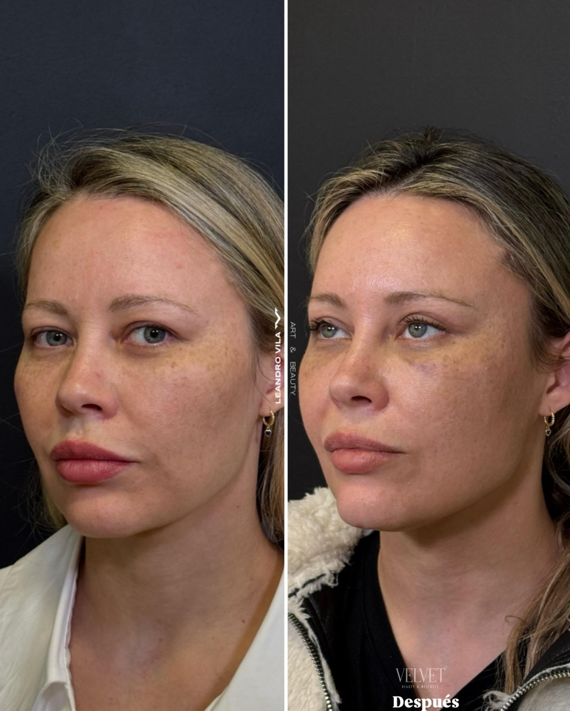

Cirugía Facial de Plano Profundo
Deep Plane Facelift en Buenos Aires
El Deep Plane Facelift actúa por debajo del plano muscular profundo (SMAS), liberando los ligamentos de retención faciales para reposicionar en bloque pómulos, surcos nasogenianos, mandíbula (jowls) y cuello sin generar tensión en la piel.
Atención presencial en CABA: consultá dirección, horarios y teléfonos en nuestra sección de contacto en Puerto Madero.

Preguntas Frecuentes sobre Deep Plane Facelift
El lifting tradicional tracciona la piel y la plicatura de SMAS pliega el músculo sin liberar anclajes profundos. El Deep Plane ingresa bajo el SMAS y libera los ligamentos retenedores, reposicionando tejidos profundos sin tirantez cutánea.
Ambos utilizan instrumental endoscópico: el Lifting Endoscópico trata el tercio superior (frente, cejas y mirada), mientras que el Deep Plane Facelift Endoscópico trata tercio medio, mandíbula (jowls) y cuello.
Trata pómulos, surcos nasogenianos, mandíbula y cuello. Las incisiones se ocultan en el contorno natural de la oreja y línea capilar, evolucionando de forma imperceptible. El retorno a actividades de oficina es de 10 a 14 días.